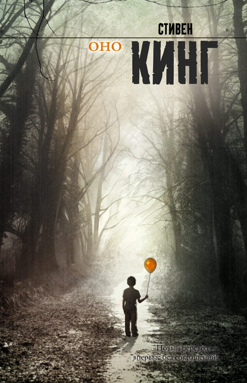

Книгоежка - читай и наслаждайся!
Краткое описание
Популярная книга Стивена Кинга "Оно"
Бестселлер. Хит продаж!
Подробная информация
- Жанр: мистика, ужасы
- Объем: 1530 страниц
- Дата написания: 1986г
- Переводчик: Виктор Вебер
«Оно́» (англ. It) — роман американского писателя Стивена Кинга, написанный в жанре ужасов, впервые опубликованный в 1986 году издательством Viking Press.
В произведении затрагиваются важные для Кинга темы: власть памяти, сила объединенной группы, влияние травм детства на взрослую жизнь.
Согласно основной сюжетной линии, семеро друзей из вымышленного города Дерри в штате Мэн сражаются с чудовищем, убивающим детей и способным принимать любую физическую форму.
Повествование ведется параллельно в разных временных интервалах, один из которых соответствует детству главных героев, а другой — их взрослой жизни.
Описание книги
В маленьком провинциальном городке Дерри много лет назад семерым подросткам пришлось столкнуться с кромешным ужасом – живым воплощением ада.
Прошли годы… Подростки повзрослели, и ничто, казалось, не предвещало новой беды. Но кошмар прошлого вернулся, неведомая сила повлекла семерых друзей назад, в новую битву со Злом. Ибо в Дерри опять льется кровь и бесследно исчезают люди. Ибо вернулось порождение ночного кошмара, настолько невероятное, что даже не имеет имени…
Читайте самый популярный роман С. Кинга в новом переводе без сокращений!
Цена книги: 10 рублей.
Для заказа книги, пожалуйста, свяжитесь с нами, нажав контакты.
Просмотреть книгу Джека Лондона "Мартин Иден"